Read this first. Every image on this page is an AI-generated raster sketch made to widen the search for shapes. None of it is a finished logo, and none of it should be shown as one.
The real Treasure Trove Finds logos are vectors, drawn on a separate track. These PNGs are idea fuel only: wobbly coastlines, off-grid curves, colours that drift outside the palette, and a model that does not actually know what Long Island looks like.
Use them the way you would use napkin doodles. Point at the two or three shapes worth chasing, then have them drawn properly.
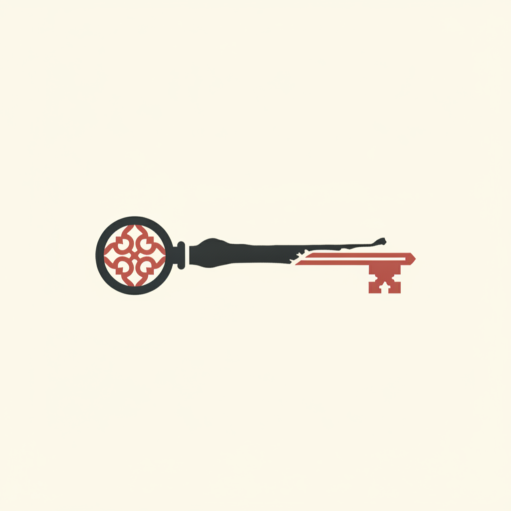
A logo mark of an antique skeleton key whose shaft is the silhouette of Long Island, New York: a long narrow horizontal landmass, wide and rounded at the west end, tapering eastward and splitting into two slender parallel forks (the North Fork and the South Fork) separated by a narrow bay, the lower fork ending in a small hook. The two eastern forks of the island form the toothed bit of the key at the right end, and a round ornate key ring sits at the west end. Single continuous solid silhouette, horizontal composition. Absolutely NO text, NO letters, NO lettering, NO words anywhere in the image. Flat vector logo design, two colours maximum, solid shapes only, no gradients, no 3D, no photorealism, no drop shadows, no texture, centred on a plain cream background, high contrast, simple enough to read at small size, professional brand mark. Palette: deep warm near-black, muted brick red, cream.
Read: Handsome ornate key with a quatrefoil bow, but the shaft is only vaguely island-lumpy and the island never reads. Steal the bow, not the concept.
Minimal logo: the silhouette of Long Island, New York: a long narrow horizontal landmass, wide and rounded at the west end, tapering eastward and splitting into two slender parallel forks (the North Fork and the South Fork) separated by a narrow bay, the lower fork ending in a small hook rendered as a key lying horizontally, deep near-black island shape with a brick red circular bow ring on the left, the forked east end reading unmistakably as key teeth. Bold thick shapes, no fine detail. Absolutely NO text, NO letters, NO lettering, NO words anywhere in the image. Flat vector logo design, two colours maximum, solid shapes only, no gradients, no 3D, no photorealism, no drop shadows, no texture, centred on a plain cream background, high contrast, simple enough to read at small size, professional brand mark. Palette: deep warm near-black, muted brick red, cream.
Read: Clean, confident key silhouette; an island contour is ghosted over the shaft and just muddies the edge. Useful as a proportion study, not as the island idea.
Emblem logo inside a thin circular brick red border: a solid near-black key made from Long Island, New York: a long narrow horizontal landmass, wide and rounded at the west end, tapering eastward and splitting into two slender parallel forks (the North Fork and the South Fork) separated by a narrow bay, the lower fork ending in a small hook, ring at the far west, forked teeth at the far east. Balanced, symmetrical framing, small decorative notch under the shaft. Absolutely NO text, NO letters, NO lettering, NO words anywhere in the image. Flat vector logo design, two colours maximum, solid shapes only, no gradients, no 3D, no photorealism, no drop shadows, no texture, centred on a plain cream background, high contrast, simple enough to read at small size, professional brand mark. Palette: deep warm near-black, muted brick red, cream.
Read: Generic key inside a double red ring, no island present at all, plus a stray floating dot. Weakest key, though the circular badge lockup is worth keeping.
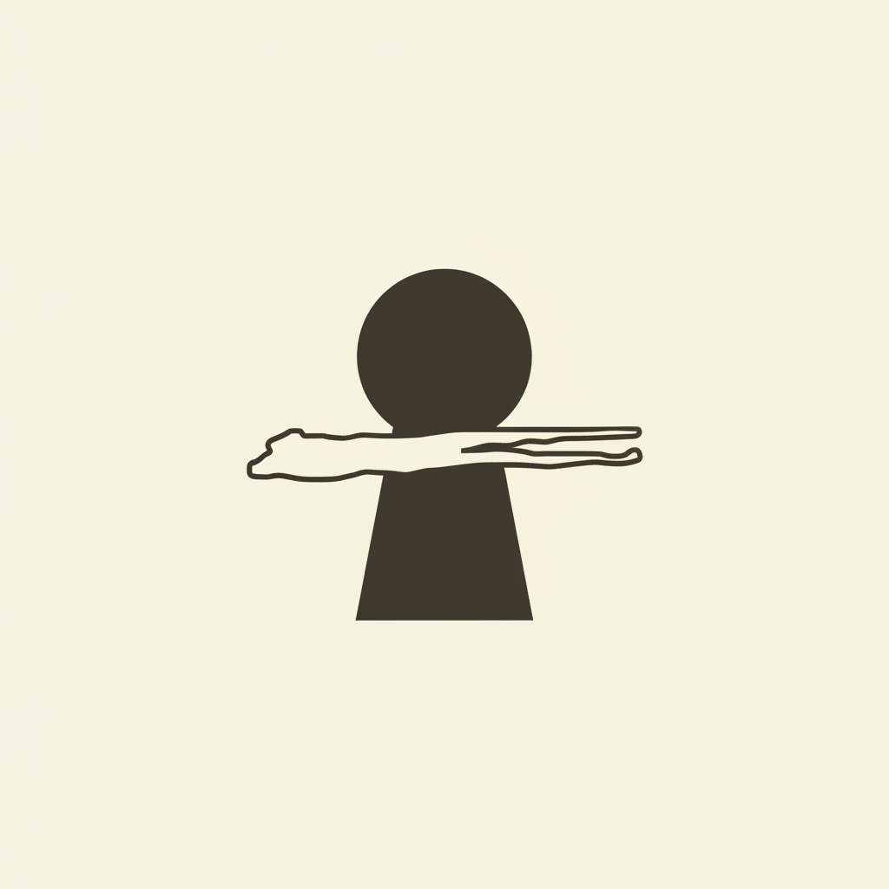
A classic antique keyhole shape, solid deep near-black, with the negative space cut out in the exact silhouette of Long Island, New York: a long narrow horizontal landmass, wide and rounded at the west end, tapering eastward and splitting into two slender parallel forks (the North Fork and the South Fork) separated by a narrow bay, the lower fork ending in a small hook. The island appears as cream-coloured empty space inside the black keyhole. Single icon, vertical composition. Absolutely NO text, NO letters, NO lettering, NO words anywhere in the image. Flat vector logo design, two colours maximum, solid shapes only, no gradients, no 3D, no photorealism, no drop shadows, no texture, centred on a plain cream background, high contrast, simple enough to read at small size, professional brand mark. Palette: deep warm near-black, muted brick red, cream.
Read: Strong black keyhole with a thin outlined island crossing it, but the crossing reads as arms on a little figure. Good idea, wrong execution.
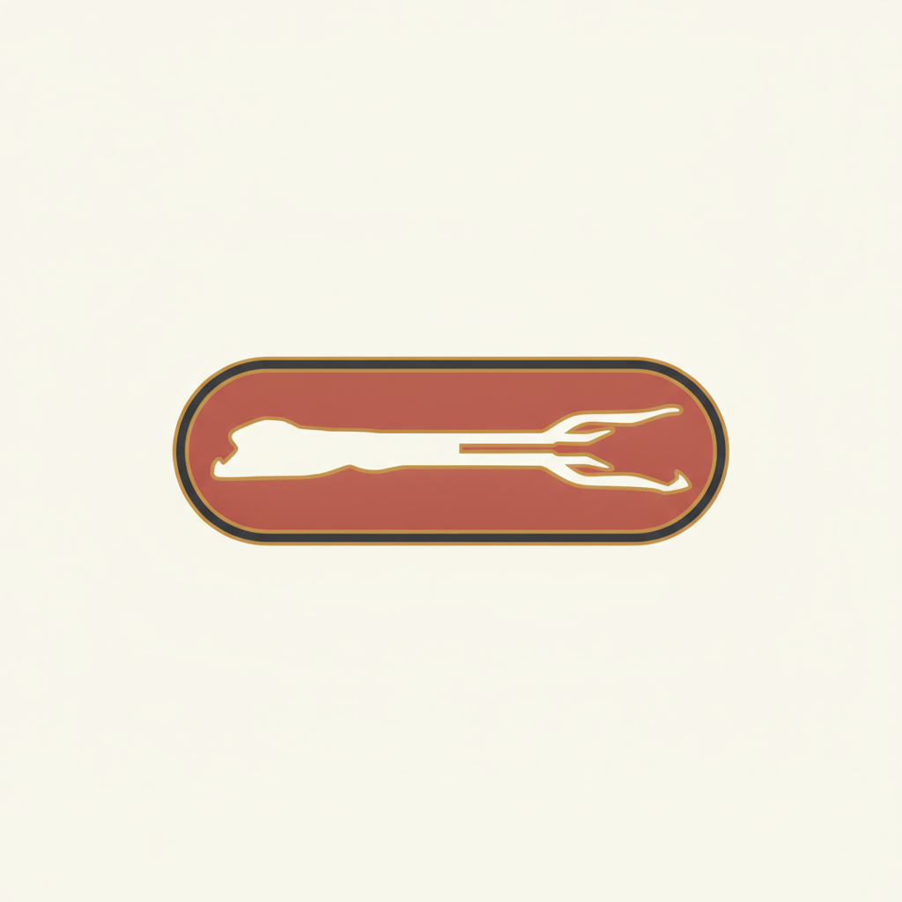
Logo mark: a rounded brick red escutcheon keyhole plate, and the hole itself is shaped like Long Island, New York: a long narrow horizontal landmass, wide and rounded at the west end, tapering eastward and splitting into two slender parallel forks (the North Fork and the South Fork) separated by a narrow bay, the lower fork ending in a small hook in cream negative space, the two forks pointing right. Bold, flat, iconic, no ornament. Absolutely NO text, NO letters, NO lettering, NO words anywhere in the image. Flat vector logo design, two colours maximum, solid shapes only, no gradients, no 3D, no photorealism, no drop shadows, no texture, centred on a plain cream background, high contrast, simple enough to read at small size, professional brand mark. Palette: deep warm near-black, muted brick red, cream.
Read: Best island drawing in the whole set: the two forks are unmistakable in cream negative space on a red capsule. Drifts to a third gold colour and drops the keyhole, but this is the shape to trace.
A keyhole whose upper circle and lower tapering slot are formed by the coastline of Long Island, New York: a long narrow horizontal landmass, wide and rounded at the west end, tapering eastward and splitting into two slender parallel forks (the North Fork and the South Fork) separated by a narrow bay, the lower fork ending in a small hook, near-black on cream, the two eastern forks becoming the bottom of the keyhole slot. Clever silhouette puzzle, one solid shape. Absolutely NO text, NO letters, NO lettering, NO words anywhere in the image. Flat vector logo design, two colours maximum, solid shapes only, no gradients, no 3D, no photorealism, no drop shadows, no texture, centred on a plain cream background, high contrast, simple enough to read at small size, professional brand mark. Palette: deep warm near-black, muted brick red, cream.
Read: Proper keyhole whose slot dissolves into the forks, with a red compass star. Top two thirds are excellent; the bottom third turns to mush at small size.
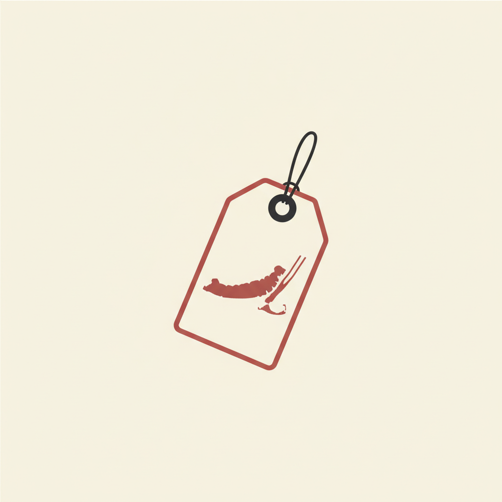
A manila shipping tag hanging by a short string, flat vector, with the solid silhouette of Long Island, New York: a long narrow horizontal landmass, wide and rounded at the west end, tapering eastward and splitting into two slender parallel forks (the North Fork and the South Fork) separated by a narrow bay, the lower fork ending in a small hook stamped across the face of the tag in brick red, and the tag's reinforced eyelet hole at the top. Slight tilt, bold clean edges. Absolutely NO text, NO letters, NO lettering, NO words anywhere in the image. Flat vector logo design, two colours maximum, solid shapes only, no gradients, no 3D, no photorealism, no drop shadows, no texture, centred on a plain cream background, high contrast, simple enough to read at small size, professional brand mark. Palette: deep warm near-black, muted brick red, cream.
Read: The tag object itself is beautifully proportioned and the most on-brand thing here. The island on the face is scratchy and too small to survive shrinking.
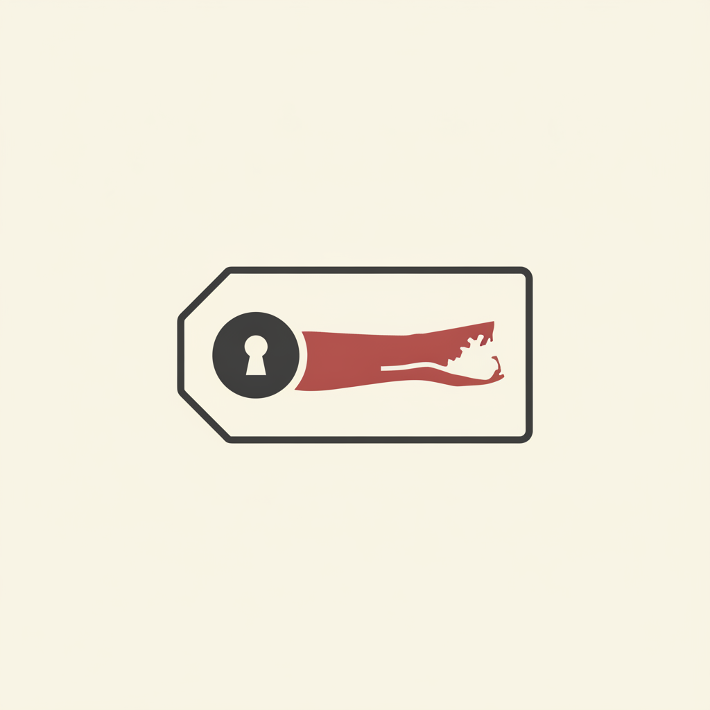
Logo icon of a rectangular parcel tag with an angled top corner, near-black outline, containing the horizontal silhouette of Long Island, New York: a long narrow horizontal landmass, wide and rounded at the west end, tapering eastward and splitting into two slender parallel forks (the North Fork and the South Fork) separated by a narrow bay, the lower fork ending in a small hook, and the tag's punched hole doubling as a small keyhole. Flat, geometric, no shading. Absolutely NO text, NO letters, NO lettering, NO words anywhere in the image. Flat vector logo design, two colours maximum, solid shapes only, no gradients, no 3D, no photorealism, no drop shadows, no texture, centred on a plain cream background, high contrast, simple enough to read at small size, professional brand mark. Palette: deep warm near-black, muted brick red, cream.
Read: Strongest tag: horizontal tag, black keyhole disc left, red island right. It solves keyhole plus island plus tag in one clean silhouette. Closest thing to a real mark.
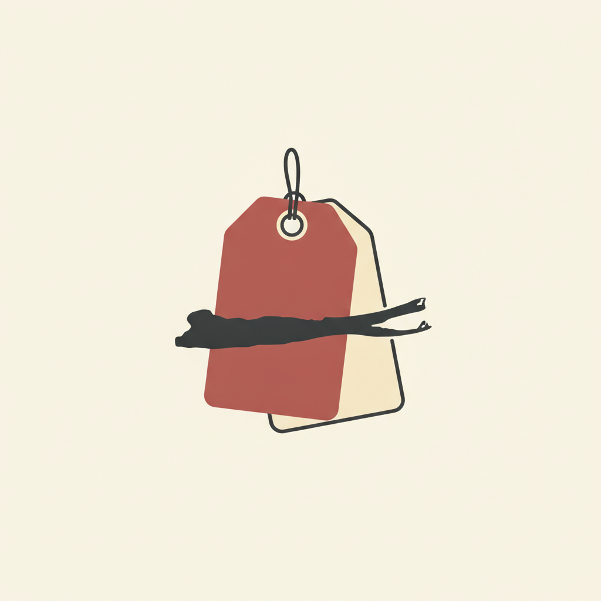
Two overlapping antique price tags seen straight on, one brick red one cream, the top tag carrying a solid near-black silhouette of Long Island, New York: a long narrow horizontal landmass, wide and rounded at the west end, tapering eastward and splitting into two slender parallel forks (the North Fork and the South Fork) separated by a narrow bay, the lower fork ending in a small hook, string looped through the eyelets. Simple flat shapes, strong outline. Absolutely NO text, NO letters, NO lettering, NO words anywhere in the image. Flat vector logo design, two colours maximum, solid shapes only, no gradients, no 3D, no photorealism, no drop shadows, no texture, centred on a plain cream background, high contrast, simple enough to read at small size, professional brand mark. Palette: deep warm near-black, muted brick red, cream.
Read: Two overlapping tags with a solid black island bar straight across. Island reads well but looks skewered through the tag. Salvageable if the island sits on the tag rather than through it.
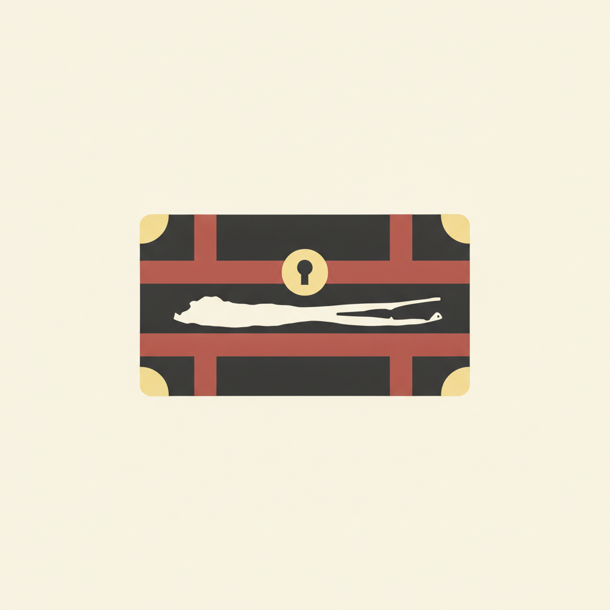
A logo of an antique steamer trunk seen from the front, flat vector, near-black with brick red banding, and the brass lock plate on the front is shaped exactly like the silhouette of Long Island, New York: a long narrow horizontal landmass, wide and rounded at the west end, tapering eastward and splitting into two slender parallel forks (the North Fork and the South Fork) separated by a narrow bay, the lower fork ending in a small hook. Symmetrical, iconic, chunky shapes. Absolutely NO text, NO letters, NO lettering, NO words anywhere in the image. Flat vector logo design, two colours maximum, solid shapes only, no gradients, no 3D, no photorealism, no drop shadows, no texture, centred on a plain cream background, high contrast, simple enough to read at small size, professional brand mark. Palette: deep warm near-black, muted brick red, cream.
Read: Flat trunk with banding, gold corners, keyhole and a cream island band. Four colours and too busy, but the island-as-a-band-across-the-trunk device is genuinely good.
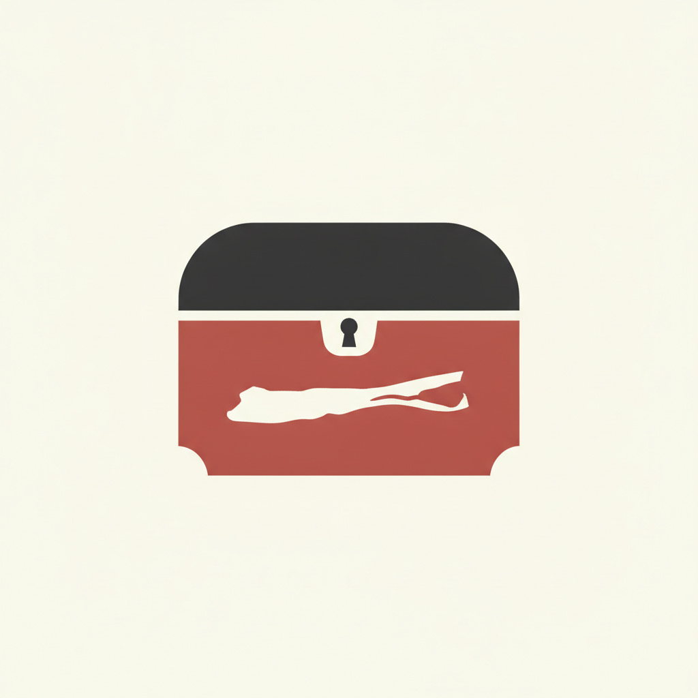
Minimal treasure chest icon with a domed lid, solid brick red body, and a single cream keyhole plate on the front whose outline is the silhouette of Long Island, New York: a long narrow horizontal landmass, wide and rounded at the west end, tapering eastward and splitting into two slender parallel forks (the North Fork and the South Fork) separated by a narrow bay, the lower fork ending in a small hook with its two forks. Very simplified, no rivets, no wood grain. Absolutely NO text, NO letters, NO lettering, NO words anywhere in the image. Flat vector logo design, two colours maximum, solid shapes only, no gradients, no 3D, no photorealism, no drop shadows, no texture, centred on a plain cream background, high contrast, simple enough to read at small size, professional brand mark. Palette: deep warm near-black, muted brick red, cream.
Read: Simplest and best chest: domed black lid, red body, small keyhole plate, cream island. Actually survives at favicon size. Usable.
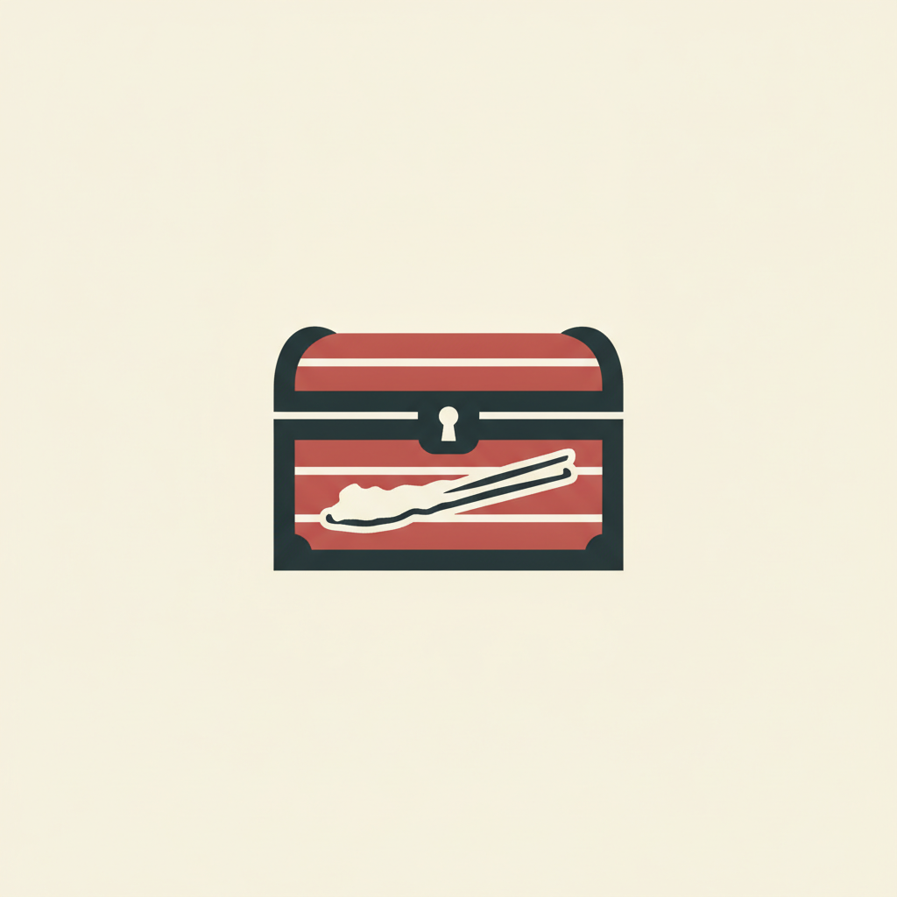
A small antique chest drawn as a flat geometric badge, near-black, its lid line and body reduced to three bars, with an island-shaped keyhole cutout in the centre matching Long Island, New York: a long narrow horizontal landmass, wide and rounded at the west end, tapering eastward and splitting into two slender parallel forks (the North Fork and the South Fork) separated by a narrow bay, the lower fork ending in a small hook. Bold small-size legibility. Absolutely NO text, NO letters, NO lettering, NO words anywhere in the image. Flat vector logo design, two colours maximum, solid shapes only, no gradients, no 3D, no photorealism, no drop shadows, no texture, centred on a plain cream background, high contrast, simple enough to read at small size, professional brand mark. Palette: deep warm near-black, muted brick red, cream.
Read: Chest with the island tilted diagonally under a heavy outline, which fights the horizontal banding. Least useful of the three chests.
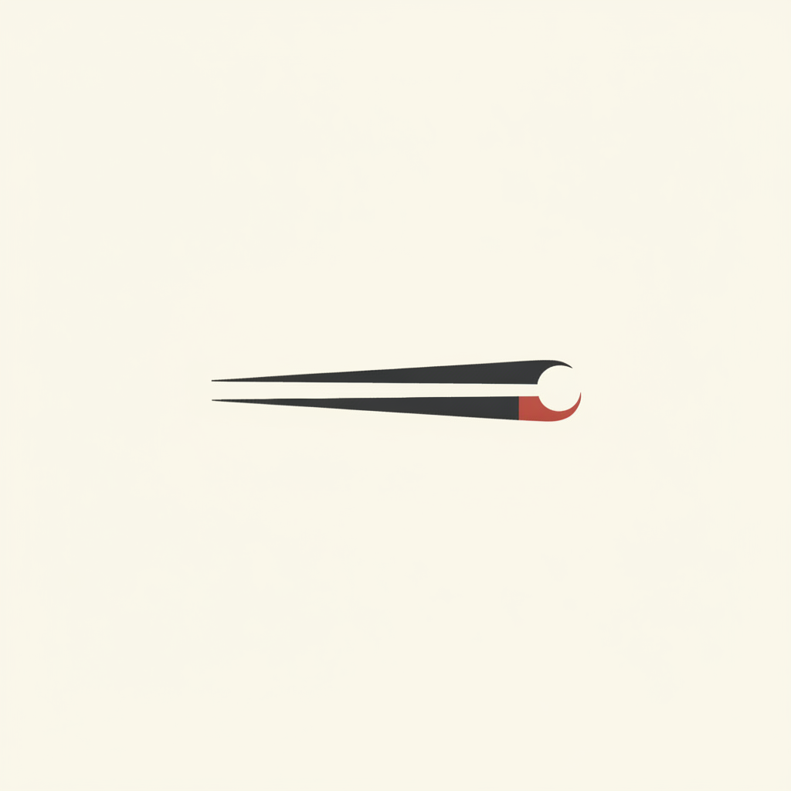
An abstract minimal logo mark made only from the two eastern forks of Long Island: two long slender tapering shapes running left to right, nearly parallel, the upper one straight and the lower one ending in a small hook, separated by a thin cream gap. Solid near-black, one brick red accent tip. Pure abstract mark. Absolutely NO text, NO letters, NO lettering, NO words anywhere in the image. Flat vector logo design, two colours maximum, solid shapes only, no gradients, no 3D, no photorealism, no drop shadows, no texture, centred on a plain cream background, high contrast, simple enough to read at small size, professional brand mark. Palette: deep warm near-black, muted brick red, cream.
Read: Elegant, confident two-blade form with a bitten cream circle, but it reads as a rocket or an arrow rather than Long Island. Keep as pure form, not as geography.
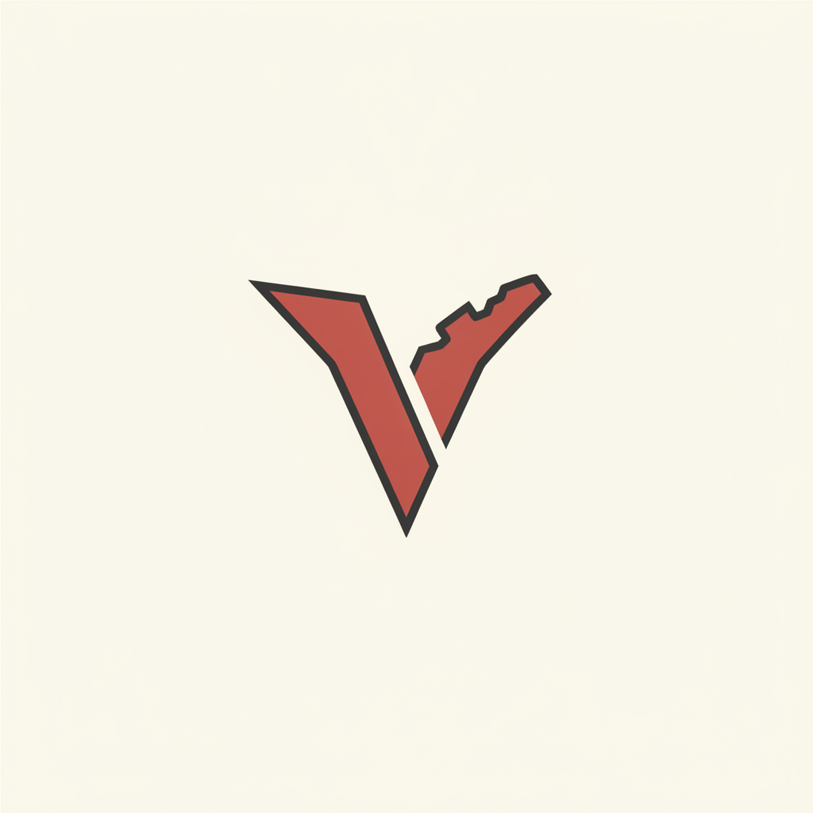
Two tapering blades forming a narrow V that opens to the right, derived from the North Fork and South Fork of Long Island, rendered as one confident brick red shape on cream. Modern, sharp, extremely simple, like a monoline mark thickened. Absolutely NO text, NO letters, NO lettering, NO words anywhere in the image. Flat vector logo design, two colours maximum, solid shapes only, no gradients, no 3D, no photorealism, no drop shadows, no texture, centred on a plain cream background, high contrast, simple enough to read at small size, professional brand mark. Palette: deep warm near-black, muted brick red, cream.
Read: Reads as a red checkmark or a letter V. No island, no key. Not usable.
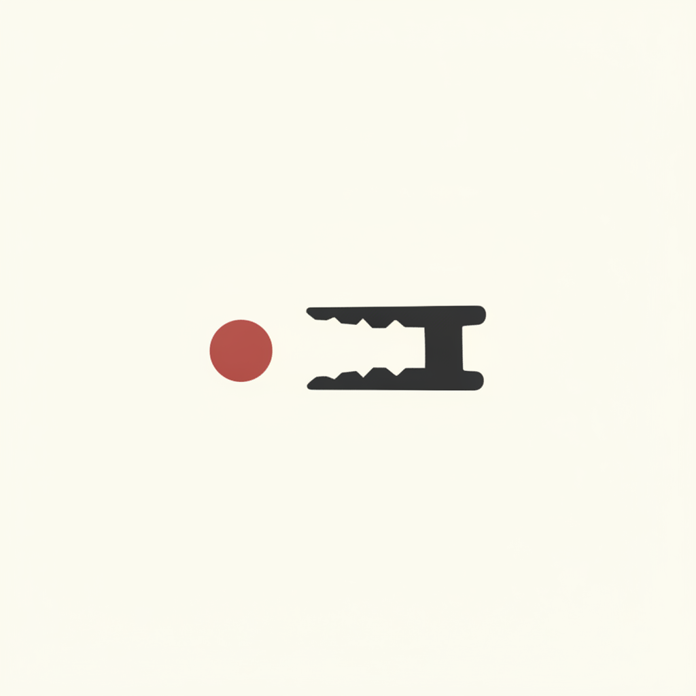
Abstract logo: two elongated forked prongs reading simultaneously as the east end of Long Island and as the bit of a key, near-black solid shapes with a single circular brick red dot to their left. Tight, minimal, high contrast. Absolutely NO text, NO letters, NO lettering, NO words anywhere in the image. Flat vector logo design, two colours maximum, solid shapes only, no gradients, no 3D, no photorealism, no drop shadows, no texture, centred on a plain cream background, high contrast, simple enough to read at small size, professional brand mark. Palette: deep warm near-black, muted brick red, cream.
Read: Two jagged prongs joined at the right with a floating red dot. Convincingly reads as key teeth and is the most distinctive abstract mark of the three. Usable.
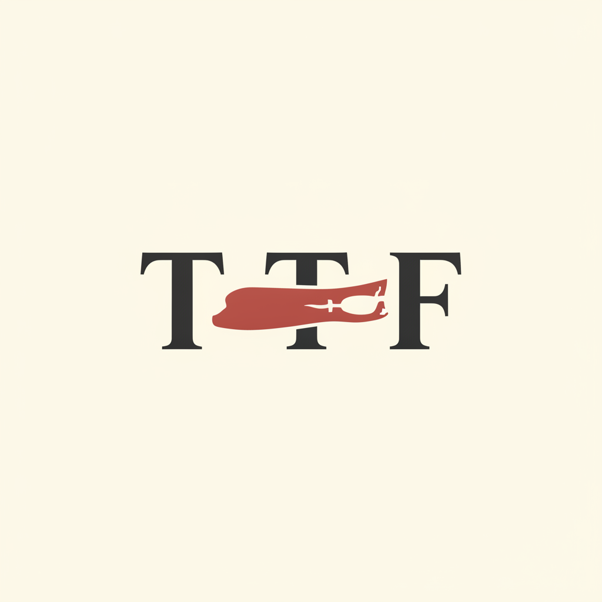
A monogram logo of the three capital letters T T F in a bold vintage slab serif, arranged in a horizontal row, with the crossbar of the middle T replaced by the solid horizontal silhouette of Long Island, New York: a long narrow horizontal landmass, wide and rounded at the west end, tapering eastward and splitting into two slender parallel forks (the North Fork and the South Fork) separated by a narrow bay, the lower fork ending in a small hook. Near-black letters, brick red island. Clean, correct, well spaced letterforms.Flat vector logo design, two colours maximum, solid shapes only, no gradients, no 3D, no photorealism, no drop shadows, no texture, centred on a plain cream background, high contrast, simple enough to read at small size, professional brand mark. Palette: deep warm near-black, muted brick red, cream.
Read: Letters are correct and well cut, but the red island slashes straight through the middle of them and wrecks legibility. Right idea, needs the island moved off the letterforms.
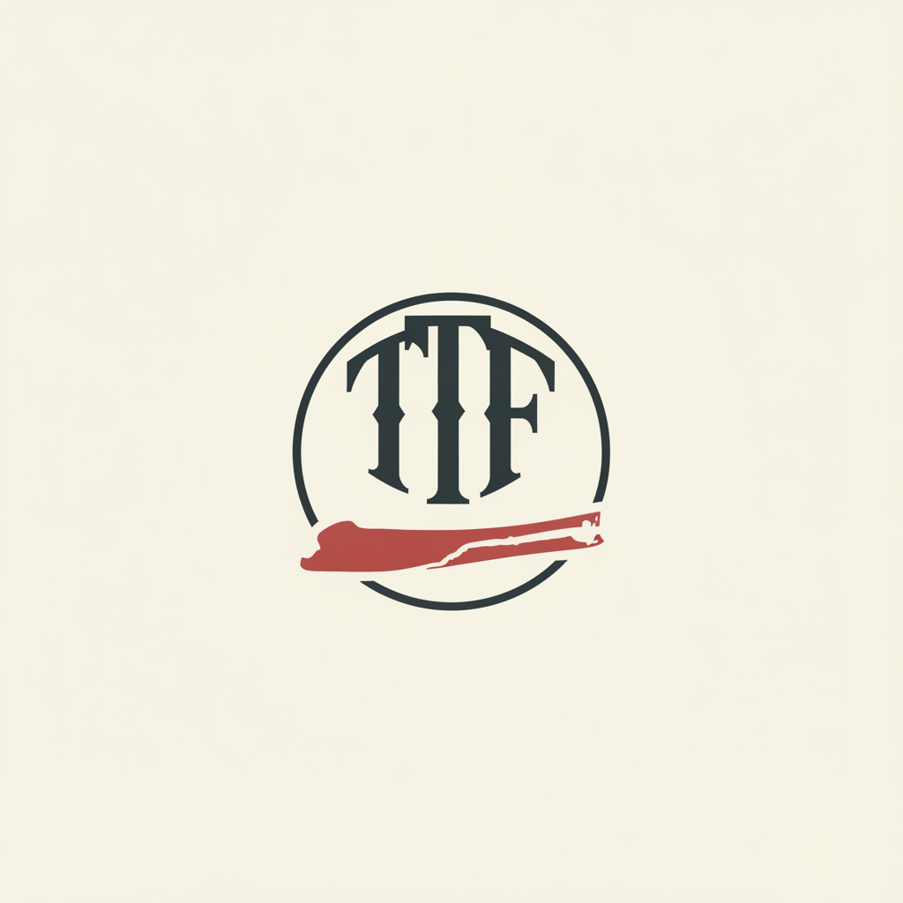
A circular badge monogram: the letters T T F stacked and interlocked in a heavy antique serif, near-black, sitting above a small brick red silhouette of Long Island, New York: a long narrow horizontal landmass, wide and rounded at the west end, tapering eastward and splitting into two slender parallel forks (the North Fork and the South Fork) separated by a narrow bay, the lower fork ending in a small hook. Only the letters T, T and F appear, spelled correctly, nothing else.Flat vector logo design, two colours maximum, solid shapes only, no gradients, no 3D, no photorealism, no drop shadows, no texture, centred on a plain cream background, high contrast, simple enough to read at small size, professional brand mark. Palette: deep warm near-black, muted brick red, cream.
Read: The T, T and F are interlocked to the point of being unreadable. The ring-with-island-across-the-bottom device is worth keeping; the lettering is not.
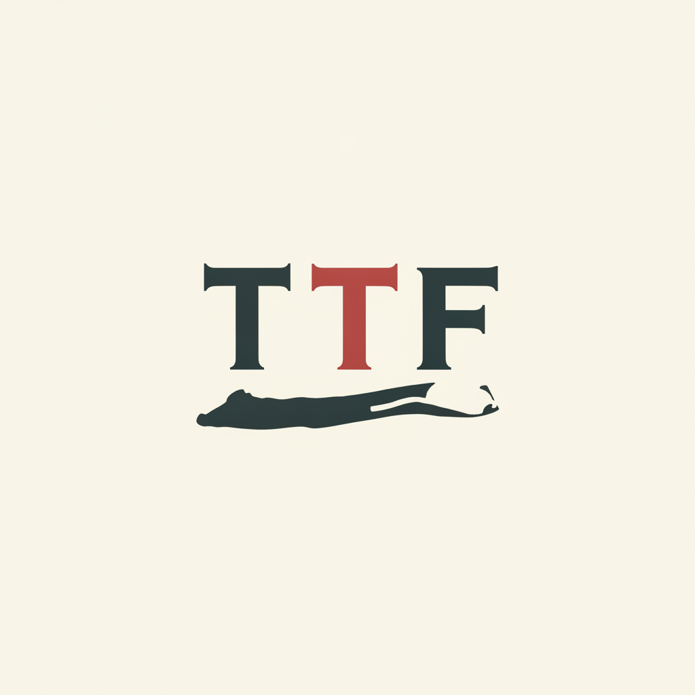
Monogram mark where a single bold letter T and letter F flank a central letter T, and the negative space beneath them forms the narrow forked silhouette of Long Island, New York: a long narrow horizontal landmass, wide and rounded at the west end, tapering eastward and splitting into two slender parallel forks (the North Fork and the South Fork) separated by a narrow bay, the lower fork ending in a small hook. Brick red and near-black on cream, letters crisp and legible.Flat vector logo design, two colours maximum, solid shapes only, no gradients, no 3D, no photorealism, no drop shadows, no texture, centred on a plain cream background, high contrast, simple enough to read at small size, professional brand mark. Palette: deep warm near-black, muted brick red, cream.
Read: Cleanest, most correct lettering in the set, island reading as a rule under the wordmark. Most usable monogram, and the easiest to rebuild properly in vector.